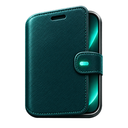

Descarcă APK-ul și instalează-l peste aplicația existentă, fără dezinstalare. Verificarea actualizărilor rămâne disponibilă în Setări; butonul Descarcă deschide browserul. Programările, setările, activarea și conexiunea HA se păstrează la actualizarea peste edițiile 1.1.x.

PENTRU TELEFONUL TĂU
Husa blocare ecran
Blocare și aprindere din husă, cu reglaj magnetic și opțiune pentru eliminarea glisării la deschidere.
Preferă magnetometrul necalibrat și folosește fallback calibrat când este nevoie. Setezi dacă elimină glisarea când nu există PIN/model/parolă; autentificarea securizată rămâne neschimbată. Verifică actualizările zilnic sau manual din meniu, reține valoarea magnetică maximă până la resetare și exportă diagnosticul din fila dedicată. Jurnalul păstrează cel mult 40 de evenimente/12 KB. Se instalează peste Husa 1.0.3, 1.0.4 sau 1.0.5.
PENTRU FRIZERIE
Agenda Frizerie
Agenda frizeriei, pe Android și pe iPhone. · Caius Poputa
Ascunde opțional cheltuielile și numărul de înmatriculare. Programări fără număr obligatoriu și buton pentru deschiderea numărului în Telefon. Backup Google Drive inclus. Instalează peste 0.4.x, fără dezinstalare. Pentru 0.3.x este necesară instalare separată. Prima activare cere PIN-ul primit separat.
PENTRU MESAJE
SMS Forward
Redirecționează automat SMS-urile noi după regulile configurate de proprietarul telefonului. Filtrarea mesajelor se face pe dispozitiv.
Folosește PIN-ul primit separat și selectează aplicația ca aplicație SMS implicită în Android.
INSTALARE SIMPLĂ
Pe telefonul tău.
01
Android
Descarcă fișierul APK și deschide-l pe telefon. Actualizările cu același identificator se instalează peste aplicația existentă. Husa 1.0.3 se actualizează peste Husa 1.0.2 și se instalează separat de Husa 1.1.6. Geometrie Roți 0.4.0 se instalează separat față de 0.3.x.
02
iPhone
Deschide varianta iPhone în Safari. Alege Partajare → Adaugă pe ecranul principal, apoi confirmă Adaugă.